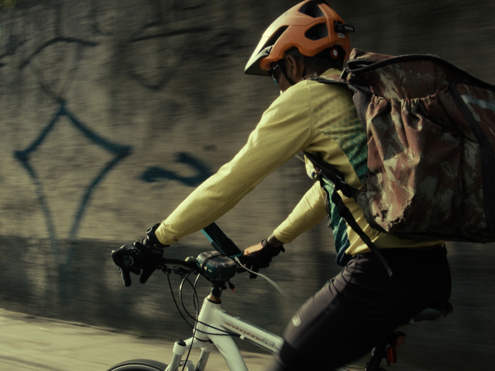

CIDADE INFINITA

| Imagem e Direção | Roberto Herrera Peres |
|---|---|
| Elenco | Raimundo Barbosa, Lucas Diniz |
| Montagem | Em processo |
| Trilha Sonora Original | Som direto mineral |
| Ano Previsto | 2027 |
| País | Brasil |
| Formato | ProRes 422 HQ · DCP 2K |
| Duração | 95 min |
| Produção | RHP Filmes |
| Estágio do Projeto | Em produção / Captação (9 horas de material bruto captado em São Paulo) |
VISÃO & LINHA EDITORIAL
A RHP FILMES é uma produtora de cinema que produz filmes autorais.
Por cinema autoral, entende-se aqui o fenômeno pelo viés do método de produção iniciado nos anos 60 com a política dos autores. O fundamental da nossa visão é a premissa de que uma estrutura compacta de produção cinematográfica favorece o realizador em agilidade, viabilidade material e liberdade formal.
Buscamos realizar um cinema que tensione a linguagem cinematográfica em recusa aos padrões narrativos industriais do entretenimento enquanto espetáculo. Este deslocamento coloca nossa prática nos termos da experimentação de linguagem e da construção do olhar.
Investigação da organização das forças sociais e da disciplina do corpo. O motor que condiciona o materialismo da vida cotidiana.
Conceito herdado da Geografia Crítica. O espaço urbano concebido como disputa, pertencimento e inscrição simbólica.
O elemento subjetivo dos personagens que atravessa o trabalho e o território, recusando a redução do ser humano a mero instrumento econômico.